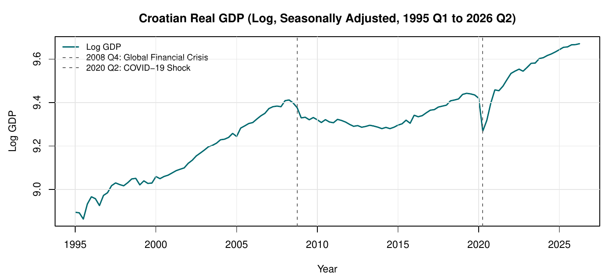
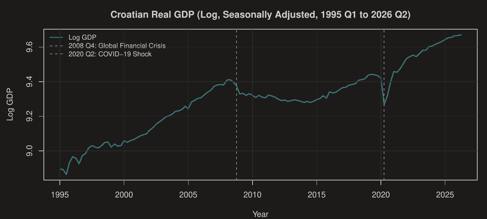
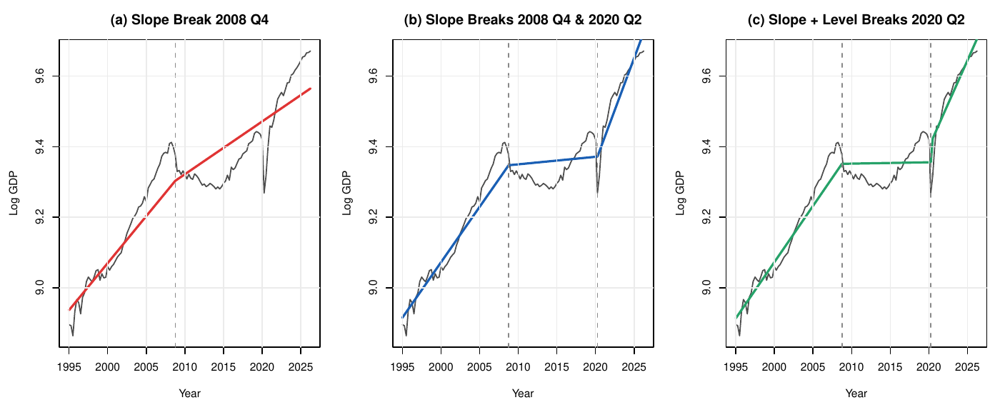
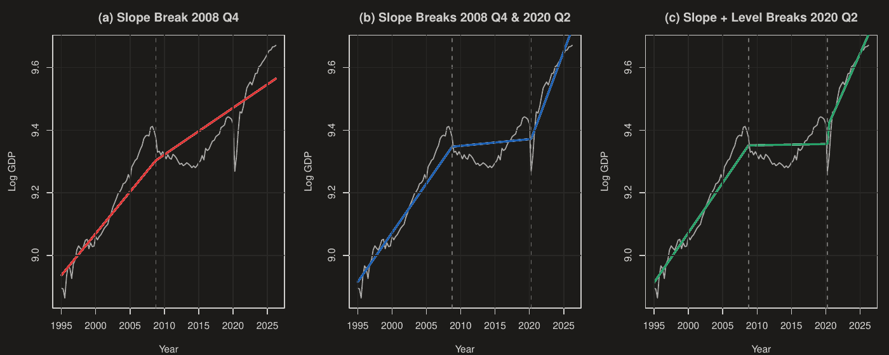
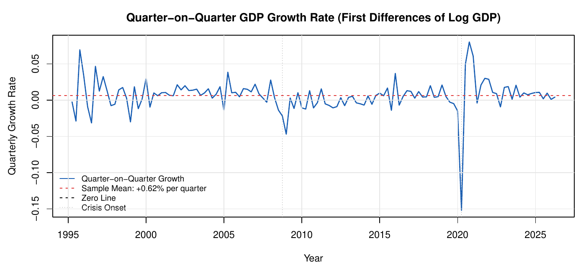
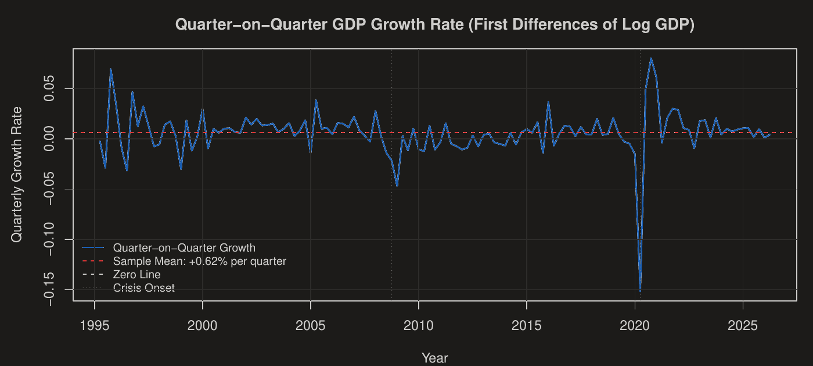

How did the 2008 financial crisis and the COVID-19 shock shape Croatia's growth path, and is quarterly GDP growth predictable? Trend models, the HP filter, spectral tests and ARFIMA models on 126 quarters of data since 1995.
Croatia's economy has grown considerably since the mid-1990s, but not smoothly. The analysis looks at three questions: what the long-run growth path looks like and how the two big crises changed it, whether quarterly growth has predictable structure, and whether shocks fade out or leave a permanent mark.


I compared polynomial trends of degree 1 to 4, three broken linear trend models and the Hodrick-Prescott filter. The best model combines breaks in slope after 2008 Q4 and 2020 Q2 with a break in level after 2020 Q2. It separates three phases: trend growth of 0.80% per quarter before the crisis, almost no growth (0.01% per quarter) between 2009 and 2020, and a strong post-pandemic phase.


The 2008 crisis was not a temporary dip: the pre-crisis peak of 2008 Q2 was only regained in 2018 Q4, 10.5 years later. COVID-19 caused a far deeper but short fall of 14.1% in 2020 Q2, and GDP was back at its pre-pandemic level by 2021 Q1.


No. The spectral white noise test from the lecture does not reject for any threshold (p-values between 0.17 and 0.58). A Ljung-Box test (p = 0.60) and an AR(1) model (coefficient 0.06) agree, and leaving out the COVID-19 years does not change the result. ARFIMA models fitted to the growth rates find no long memory either (semiparametric estimate d = 0.03, standard error 0.04).
R (mFilter, fracdiff, kableExtra), RMarkdown.
I'm currently looking for an entry-level role in data analysis, data science or risk analytics.